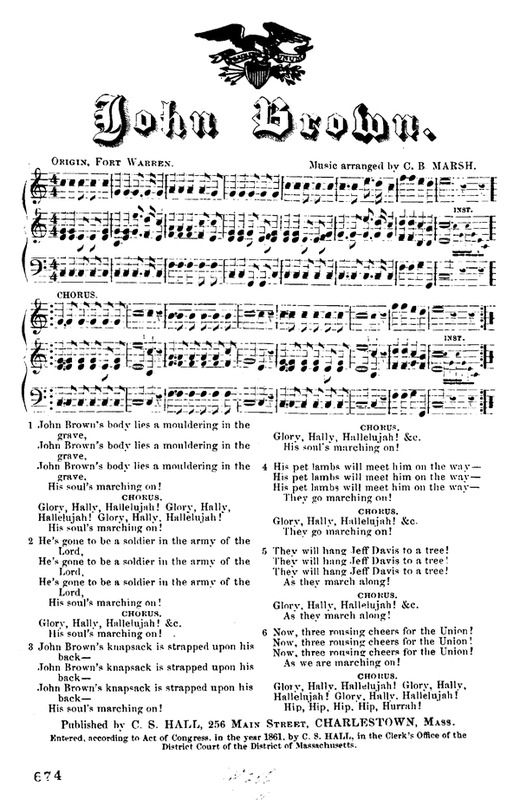
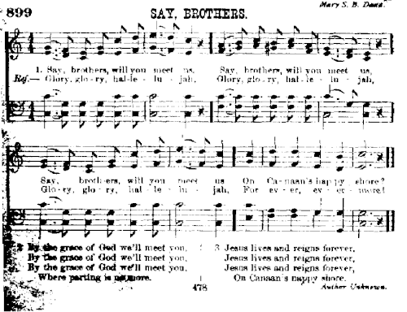
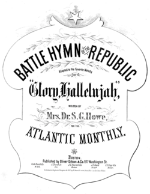
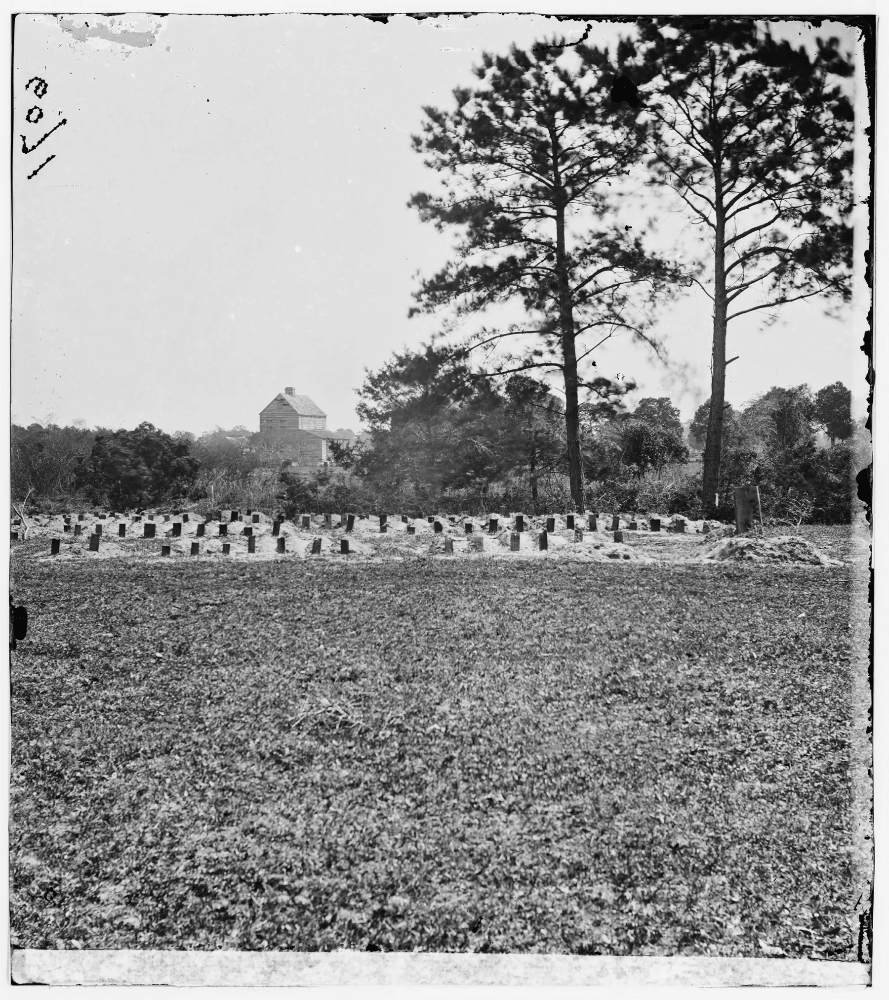
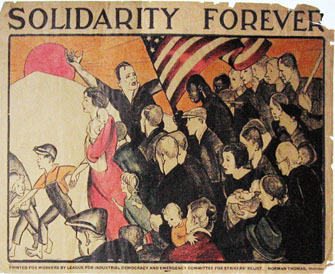

Even the dead will not be safe from the enemy if he wins (John Brown's Body)

Pine, iron oxide milk paint, motorized music box movement, paper
This sculpture plays an arrangement of a single melody that has carried four distinct songs across three centuries: the hymn "Say Brothers," the Civil War song "John Brown's Body," Julia Ward Howe's "Battle Hymn of the Republic," and the 1915 labor anthem "Solidarity Forever." A motorized movement reads punched paper much like a player piano, translating this melody into sound.
The piece considers how song, memory, and labor are embodied, transmitted, and contested as they tumble through the turbid wake of history. The cradle form draws from an image of a cradle at John Brown's farm in Elba, New York, as well as contemporaneous Shaker designs. Cradles are a site of both rest and transmission. (A child's first music is often a lullaby, itself a work song.) Cradles are also morphologically similar to coffins, an ultimate site of rest beyond the mundane present.
“John Brown’s Body” — sometimes called “John Brown’s Song” — is a Civil War-era anthem commemorating the abolitionist John Brown, who in 1859 led a raid on the federal armory at Harpers Ferry, West Virginia. His plan was to seize weapons and distribute them to enslaved people, a catalyzing a rebellion throughout the South. The raid failed; most of his company was killed, including two of his sons, and Brown was captured, tried, and hanged. Even so, his action is widely understood as a tipping point toward the war that ended slavery.

A few years later, in 1861, soldiers at Fort Warren in Boston Harbor discovered a sergeant in their ranks who shared the martyr’s name. The soldiers, steeped in the camp meeting revival tradition of communal songmaking, began setting mocking-affectionate verses about this coincidence to the melody of the old hymn “Say Brothers.” The result crystallized into the now-familiar lyric, which spread like wildfire through the Union rank-and-file:
John Brown’s body lies a-mouldering in the grave / His soul is marching on.
The song’s origins are as tangled as folk music tends to be. “Say Brothers” appears in print as early as 1808, in camp meeting songbooks from South Carolina, Virginia, and Massachusetts. Historians trace the melody variously to an African-American wedding song from Georgia, a British sea shanty, and a Swedish drinking song.

Some found the irreverent, spirited song too brash. Julia Ward Howe actually wrote “The Battle Hymn of the Republic” explicitly to supply “good words for that stirring tune” — a sanitized revision that has since displaced the original in official memory, though never in the mouths of the soldiers themselves. Frederick Douglass wrote that Brown “was with the troops during that war, he was seen in every camp fire, and our boys pressed onward to victory and freedom, timing their feet to the stately stepping of Old John Brown.”

Shortly after the Union victory in the spring of 1865, a mass grave of more than 250 Union prisoners of war was uncovered behind a racetrack in Charleston. On May 1, a parade of newly freed Black Americans marched through Charleston in their memory. I imagine hearing it from a distance: a mass of sweet voices cuts through the cool spring thaw. As you approach Main Street, the singing swells. All at once, a huge mass of human life irrupts, their song pulsing the air in front of them. There are 10,000 people marching, led by a colonnade of 3,000 young Black schoolchildren carrying bouquets of flowers, with John Brown’s name on their lips. Their feet send up clouds of ochre dust; the brick facades vibrate with their song. “John Brown’s body lies a-mouldering in the grave, his soul is marching on,” they sing, marching through the streets of Charleston.
This is considered the first observance of the holiday now known as Memorial Day. To my mind, it’s also one of the most spectacular pieces of music ever made, insofar as music is not an idea, or a set of notes, but a fleeting body politic brought together in song.

The melody was not finished traveling. In 1915, labor organizer Ralph Chaplin set new words to the same tune: “Solidarity Forever,” now the definitive anthem of the American labor movement. There is an unspoken contract between these two songs — an alloyed message across movements and decades. The Preamble to “Solidarity Forever” reads: “Instead of the conservative motto, ‘A fair day’s wage for a fair day’s work,’ we must inscribe on our banner the revolutionary watchword, ‘Abolition of the wage system.’” These words echo directly Brown’s own convictions: that abolition — not accommodation — is the only correct response to racialized capital.

Documentation